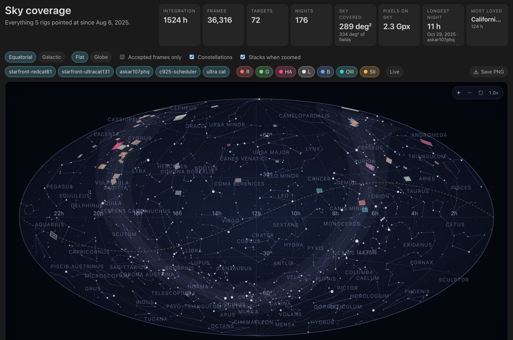
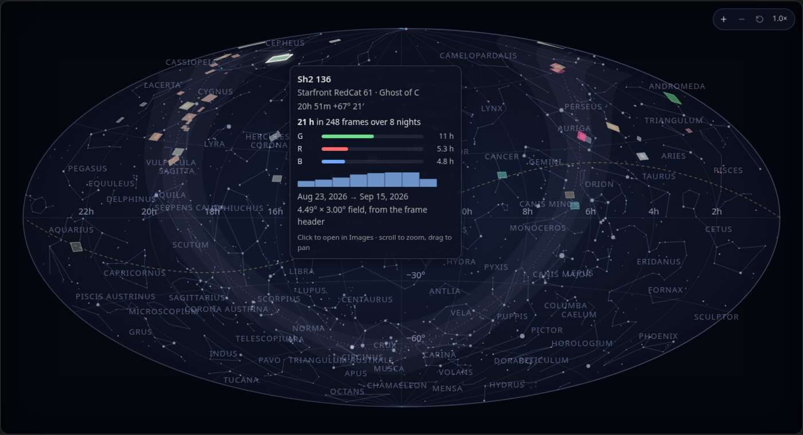
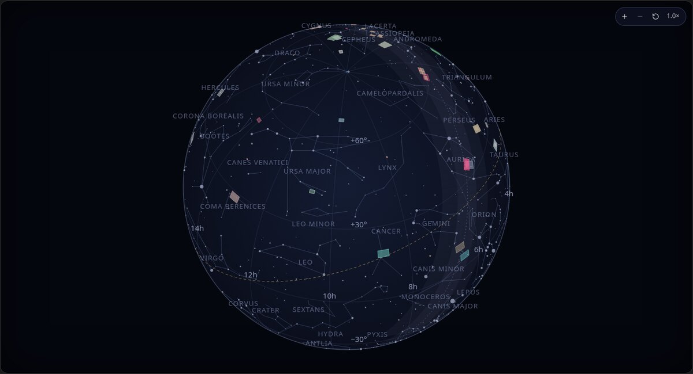
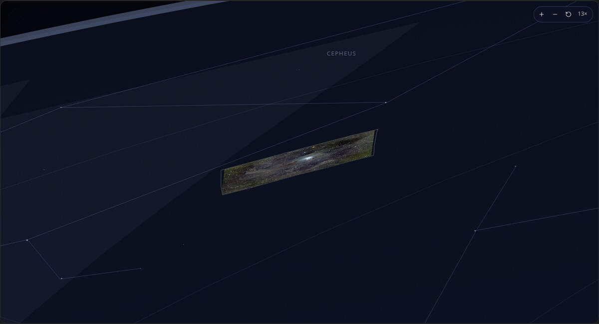
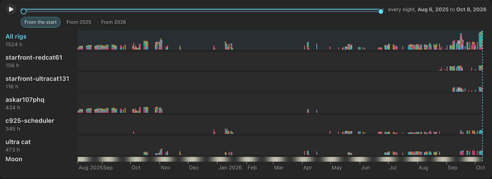
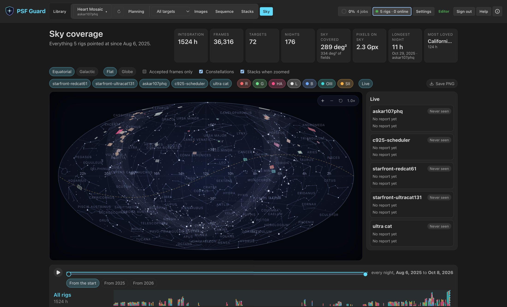
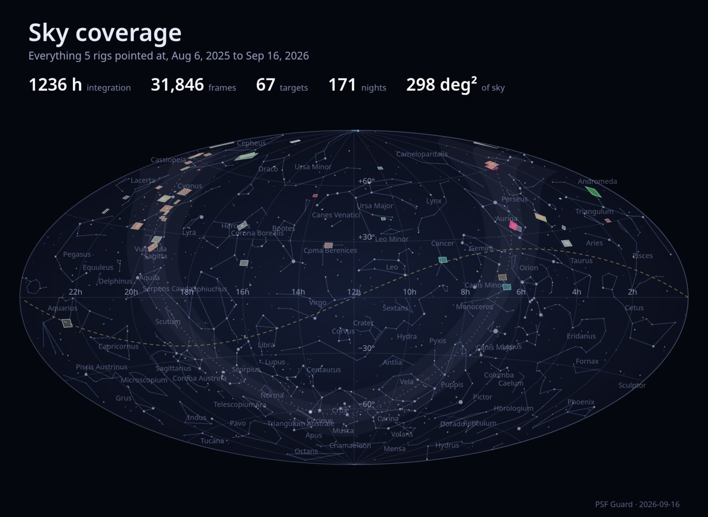

Sky Coverage
The Sky view draws every target from every registered database on one map of the whole sky, replays the nights that built it, and shows where each rig points now. Open it with Sky in the header.

Fields on the map
Each target is drawn as the patch of sky its camera covers. Its colour is the mix of filters that went into it, and it is brighter the more hours it has. The field size comes from the best source at hand:
- a plate solve of one of the target's frames, drawn as measured;
- otherwise the sensor size and focal length in one frame's FITS header, turned by the rotation the scheduler planned;
- a dot when neither is available.
Hover a field for its card: rig, project, coordinates, hours per filter, a sparkline of hours per night, frame and night counts, first and last night, where the field size came from, and which stack is shown. Click the field to open the target in Images.

Equatorial shows right ascension and declination with the galactic plane dashed. Galactic shows galactic longitude and latitude with the celestial equator dashed. The ecliptic is the dotted gold line, and a soft band marks the Milky Way. Behind the fields sit every star to magnitude 5.5 and the constellation figures and names, which Constellations hides.
Turn the sky or view it as a globe
Flat is the sky seen from inside the sphere, the whole of it at first. Globe is the same sphere seen from outside. In both, a drag turns the sky in any direction at every zoom, and the projection centres on where you turned it, so what you look at has the least distortion. Scroll to zoom about the centre of the view. The corner buttons step the zoom and return to the whole sky; a double click does the same.
The page remembers its frame, shape, turn, zoom and cuts for the browser session, so coming back from Images lands on the same sky.

Stacks in place
Past three times zoom, each field with a finished stack shows the picture inside its outline: the target's latest colour stack when one exists, else the mono stack with the most integration. A stack is placed by its reference frame's plate solve when the astrometry cache holds one, carried through the stack's own orientation, so it lands where the pixels are. Any channel with a solved frame can place a colour stack. Without a solve, the picture is laid in by the planned rotation, north up and east left, which can be a flip out. Stacks when zoomed turns the pictures off.

Replay the nights
Under the map, one lane per rig shows each night's integration as a bar stacked by filter, with month ticks below and a Moon row whose brightness is that night's illumination. With more than one rig, an All rigs lane on top sums them.
The slider spans the nights the chosen rigs and filters captured, and has two thumbs. The right thumb shows the map as it stood at the end of a night; the left sets where the story starts, and the year chips under it jump the start to January of a year. Press play to replay from the start thumb: fields appear as their first frames arrive and brighten as hours add up. The stat band reads "from" and "as of" while the range is narrowed.

A night is the civil date it began on. PSF Guard splits each catalog's day at its quietest hour, the middle of the longest stretch of the UTC day in which that catalog never captured anything. An evening and the small hours after it share one night whatever the site's longitude, and a rig imaging across noon UTC is not cut in two.
Filters and totals
Chips turn rigs and filters on and off, and Accepted frames only counts graded-in frames alone. Every number on the page follows the same cut: the stat band, the fields, their cards and the timeline. The band gives:
- integration hours, frames, targets and nights;
- sky covered: the area the shown fields reach, overlaps counted once, to a twentieth of a degree, with the fields added together beneath it when that is more;
- pixels on sky: each covered patch counted at the finest plate scale of any field that reached it, so a long focal length earns more per square degree;
- the longest night: the most one rig captured in one night, and which rig;
- the target with the most hours.
Live rigs on the sky
Live draws each rig that reports through the N.I.N.A. Director plugin on the map, where it points now. Turn it on with the Live chip in the Sky's controls, or with the header's Live chip from any view. The header chip counts the rigs and how many are exposing, and turns red when one has gone quiet.
| Mark | Meaning |
|---|---|
| Green ring | The rig is exposing. |
| Gold ring | The rig is doing something else. |
| Dashed red, "(quiet)" | The rig has stopped talking. |
| Dashed red, "(old report)" | The rig still talks, but its last status is more than ten minutes old. |
| Dotted ring, "at target" | Placed at the target the rig names, not at a position its mount reported. |
A list beside the map names each rig, its state (Online, Quiet, Offline or Never seen) and what it says it is doing. Choose a rig to turn the map to it and zoom in. The full Live table sits under the timeline; see Rigs. The choice stays in the address (live=1), and saved pictures leave the rigs out.

Save the map as a poster
Save PNG renders the map at twice its on-screen size, as shown and as zoomed, with the title, the span and the numbers above it. The browser offers the button; the desktop app does not.

Where the numbers come from
GET /api/db/{db}/sky/coverage returns, for one database: every target with its coordinates in degrees, frame and second totals per filter, the nights it was shot and its footprint; every night, target and filter row; the filters seen; and the totals, including the hour the catalog's nights split at. Seconds come from each frame's recorded exposure. A target with a finished stack also carries preview: the preview URL, the pixel grid it covers, whether it is colour or one filter, and a TAN solution on that grid when the reference frame was solved. The page asks every registered database and merges the answers.
The constellation figures, constellation names and stars drawn behind the fields come from the d3-celestial data set, Copyright (c) 2015, Olaf Frohn, under the BSD 3-Clause License.